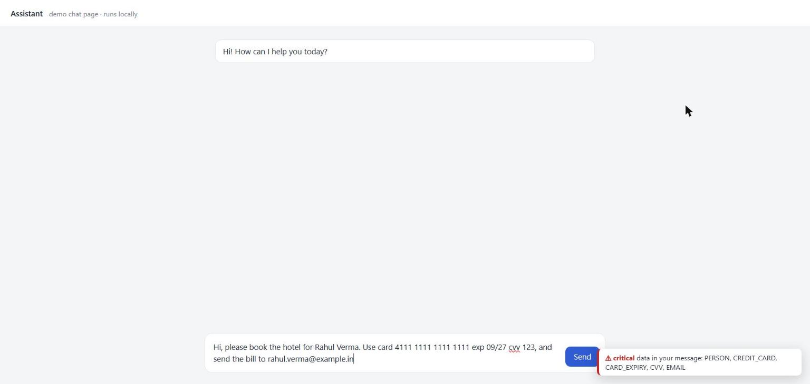
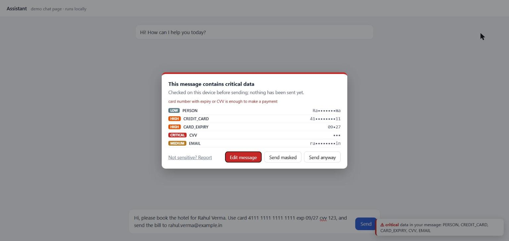
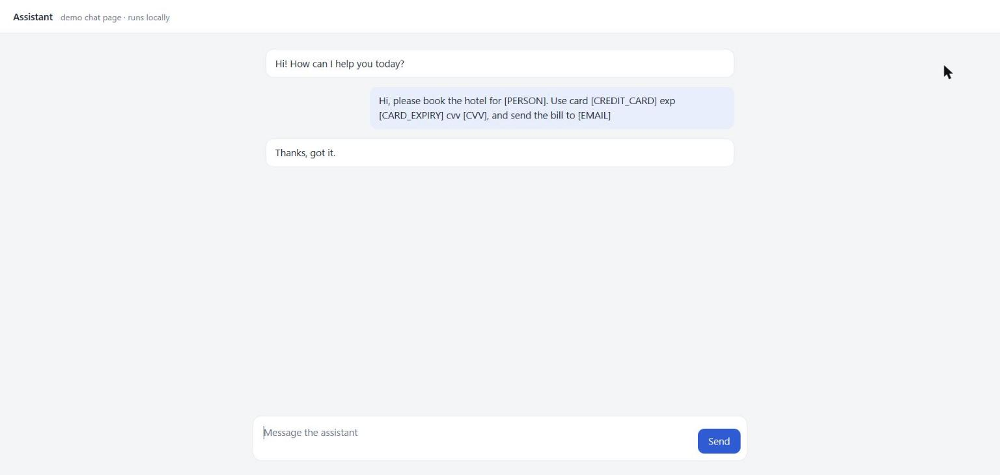
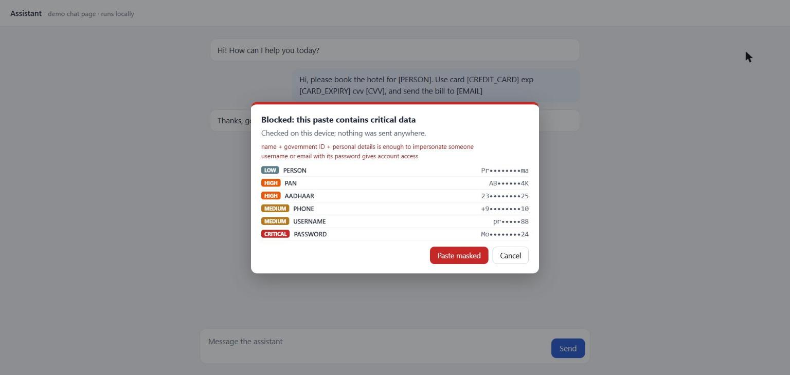
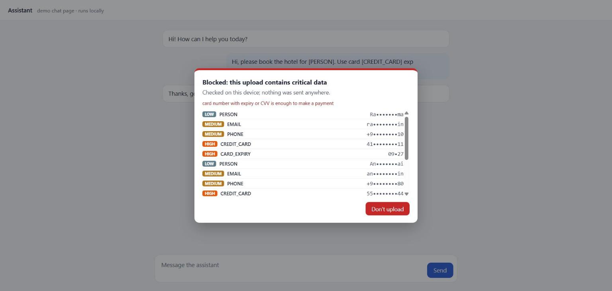
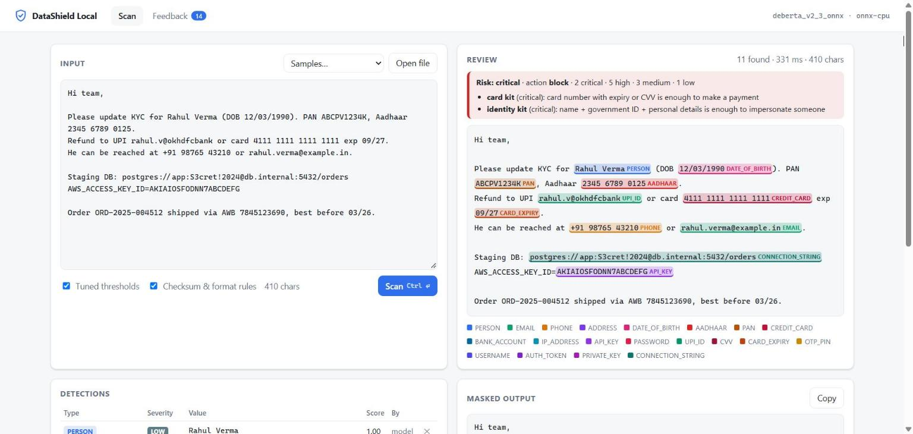

DataShield Local checks what you paste, type, send and upload on ChatGPT, Claude, Gemini, Copilot and Gmail, and scans files on your disk. A local model plus checksum rules finds personal data, Indian IDs, payment data and secrets. Nothing you check ever leaves your computer.
Screenshots from the browser extension on a local demo chat page. All values are made up.






20 labels, each with a severity and default action you can change in policy.yaml.
Leaked keys are the costliest mistake.
Card numbers checked with Luhn, IBAN with mod-97.
Aadhaar verified with the Verhoeff checksum.
Context-aware, so order numbers and dates of other things are left alone.
Findings are weighed together: a card number alone is serious, a card with its CVV is critical.
| Severity | Labels (default policy) | Action |
|---|---|---|
| Critical | CVV, OTP / PIN, password, private key, connection string, API key, auth token | Block |
| High | Card number, card expiry, bank account, Aadhaar, PAN, UPI ID | Mask |
| Medium | Phone, e-mail, address, date of birth, username | Warn |
| Low | Person name, IP address | Allow |
Strict span F1 with the checksum rules, on test sets whose wording was held out from training.
Real-world accuracy is measured on few documents so far; expect it to be lower than the synthetic numbers. Details and limits are in the model card.
pip install "datashield-local @ git+https://github.com/agarje02/data_shield_local" datashield-local download-model
http://127.0.0.1:8765:
datashield-local
datashield-local scan ~/Downloads --html report.html
datashield-local install-native-host once, then load the
extension/ folder from the repo in chrome://extensions with Developer mode on.The engine listens on 127.0.0.1. No text, file or finding is sent anywhere.
Programs need a per-user token; web pages and other hosts are refused.
The audit log keeps labels, locations and salted hashes, never the values.
If the engine is off, the extension steps aside instead of slowing you down.